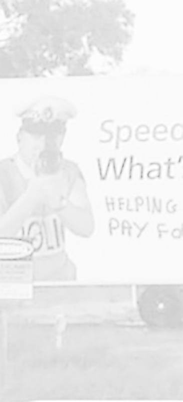

I've often wished that I had something like a small colored light to prompt me, instead of having to continuously look down at my instrument cluster
I wondered how it could be done
and wanted to see if I could do it
After countless sketches, designs, research and ideas I have built a functioning prototype that is showing great promise than expected
I wondered how it could be done
and wanted to see if I could do it
After countless sketches, designs, research and ideas I have built a functioning prototype that is showing great promise than expected